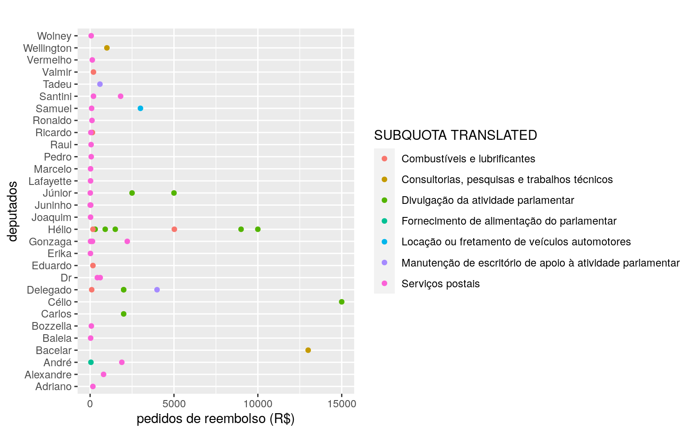

Olá, nesse post vou falar sobre Web Scraping com R.
Para iniciar vou falar sobre o projeto “SERENATA DE AMOR” https://serenata.ai/ que é um projeto aberto no qual usa data science (ciência de dados) - a mesma tecnolgia usada por gigantes como Google, Facebook e Netflix - com o objetivo de monitorar os gastos públicos e compartilhar informações de forma acessível a todos.
Até a data de hoje 29.12.2020, o projeto já reportou 8.276 ressarcimentos suspeitos à Câmara dos Deputados envolvendo 735 parlamentares diferentes e mais de R$ 3,6 mi.
Quer saber como funciona o sistema de relatórios? Você pode ler mais neste post - clicando aqui!.
Explicado o projeto Serenata, voltamos ao Web Scrapping, que neste caso vamos utilizar o Jarbas ) que é a plataforma onde ficam armazenados os documentos analisados com o objetivo de coletar informações do site. Com o intuito de mostrar que é possível analisar os dados da forma que desejar para tomada de decisões, um gráfico será gerado com os dados coletados de alguns deputados e os valores de reembolso solicitados por eles.
Passo 1: Lendo a URL.
Para ler a página em html, será utilizado a função “read_html” do pacote rvest.
library(rvest)## Carregando pacotes exigidos: xml2url <- "https://jarbas.serenata.ai/dashboard/chamber_of_deputies/reimbursement/"
jarbas_webpage <- read_html(url)Passo 2: Agora, a melhor parte da biblioteca rvest é que você pode extrair os dados de html em forma de nós, o que significa que você pode selecionar imediatamente quais os nós através dos ids ou classes css e extrair o texto das tags do html. Então eu fui para o meu url e abri o “firebug ” no navegador e percebi que os nomes dos deputados foram encapsulados na classe css “.field-congressperson_name ”, usando esta classe css que posso extrair todos os nomes dos deputados na página da web.
Existem 2 funções que usaremos aqui:
#Scraping usando classe css ‘field-congressperson_name’
jarbas_names_html <-html_nodes(jarbas_webpage, '.field-congressperson_name')
jarbas_names <- html_text(jarbas_names_html)
head(jarbas_names)## [1] "Valmir Assunção" "Hélio Leite" "Hélio Leite" "Hélio Leite"
## [5] "Bacelar" "Hélio Leite"Da mesma forma, agora farei isso para todos os outros atributos: SUBQUOTA TRANSLATED, FORNECEDOR. Cada um desses atributos tem suas próprias classes css: field-subquota_translated, field-supplier_info.
#SUBQUOTA TRANSLATED
jarbas_subquota_html <-html_nodes(jarbas_webpage, '.field-subquota_translated')
jarbas_subquota <- html_text(jarbas_subquota_html)
head(jarbas_subquota)## [1] "Combustíveis e lubrificantes"
## [2] "Divulgação da atividade parlamentar"
## [3] "Divulgação da atividade parlamentar"
## [4] "Combustíveis e lubrificantes"
## [5] "Consultorias, pesquisas e trabalhos técnicos"
## [6] "Combustíveis e lubrificantes"#Fornecedor
jarbas_provider_html <-html_nodes(jarbas_webpage, '.field-supplier_info')
jarbas_provider <- html_text(jarbas_provider_html)
head(jarbas_provider)## [1] "POSTO MK 107 NORTE LTDA05.625.571/0001-35"
## [2] "PRISCILLA DE CASSIA PORTELA VINHOTE 7054665724934.314.072/0001-25"
## [3] "M SANTOS GUIMARAES EIRELI23.936.281/0001-94"
## [4] "SUPER POSTO PALMEIRA LTDA83.838.839/0001-20"
## [5] "NARCISO COELHO E MATOS ADVOGADOS ASSOCIADOS17.359.366/0001-54"
## [6] "Posto de Combustiveis Garantia Ltda72.578.438/0002-43"A seguir serão mostrados o valor do reembolso, note que eles são extraídos
em tipo de variável caracter: Ex: R$ 139,76, R$ 40,23.
Entretanto, como desejamos manipular esses números, precisamos convertê-los para tipo de variável numérica, dessa forma será utilizado a biblioteca: “Stringr” mais especificamente a função: str_extract. Segue o script para conversão da variável.
library(stringr)
#valores em Real
jarbas_value_html <-html_nodes(jarbas_webpage, '.field-value')
jarbas_value <- html_text(jarbas_value_html)
head(jarbas_value)## [1] "R$ 198,84" "R$ 900,00" "R$ 300,00" "R$ 5022,28" "R$ 13000,00"
## [6] "R$ 168,94"#R$ 139,76" "R$ 40,23" "R$ 72,05" "R$ 72,05" "R$ 56,39" "R$ 235,64"
#dados extraídos na forma de caracter, vamos converter para tipo numérico
jarbas_value <- as.numeric(sub(",",".",str_extract(jarbas_value,pattern = "\\-*\\d+,\\s{0,}\\d+")))
head(jarbas_value,25)## [1] 198.84 900.00 300.00 5022.28 13000.00 168.94 600.65 129.17
## [9] 88.42 26.54 800.62 64.84 164.00 25.84 1817.62 199.35
## [17] 1889.55 64.45 60.40 2214.45 139.32 25.65 3000.00 5000.00
## [25] 1500.00Passo 3: Com essas informações disponíveis, vamos gerar um dataframe. Para facilitar a visualização, apenas o primeiro nome de cada deputado foi selecionado.
#Combinando todas as características obtidas
jarbas_names <- str_extract(jarbas_names,pattern = boundary("word"))
jarbas_df <- data.frame(
Name = jarbas_names,
Subquota = jarbas_subquota,
Provider = jarbas_provider,
Value = jarbas_value
)
str(jarbas_df)## 'data.frame': 100 obs. of 4 variables:
## $ Name : Factor w/ 51 levels "Adriano","Afonso",..: 48 26 26 26 5 26 16 49 43 27 ...
## $ Subquota: Factor w/ 9 levels "Combustíveis e lubrificantes",..: 1 3 3 1 2 1 9 9 9 9 ...
## $ Provider: Factor w/ 71 levels "AMAZONIA 7 PRODUCOES LTDA10.957.640/0001-48",..: 50 52 39 66 46 48 18 23 23 23 ...
## $ Value : num 199 900 300 5022 13000 ...Passo 4: Numa primeira análise, podemos utilizar gráfico entre o valor do reembolso e o nome dos deputados. Foram utilizados as 50 primeiras linhas do data.frame e uma biblioteca ggplot2 para geração do gráfico.
library(ggplot2)
jarbas_df <- jarbas_df[1:50,]
ggplot(
jarbas_df, aes(Value,Name,colour=Subquota)) +
geom_point() +
labs(title="", x ="pedidos de reembolso (R$)",
y = "deputados",colour="SUBQUOTA TRANSLATED")